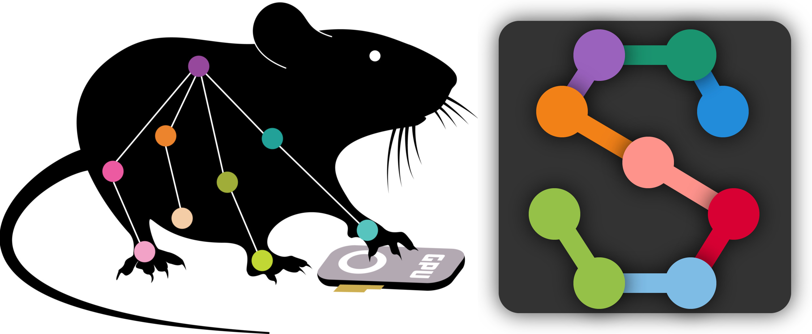
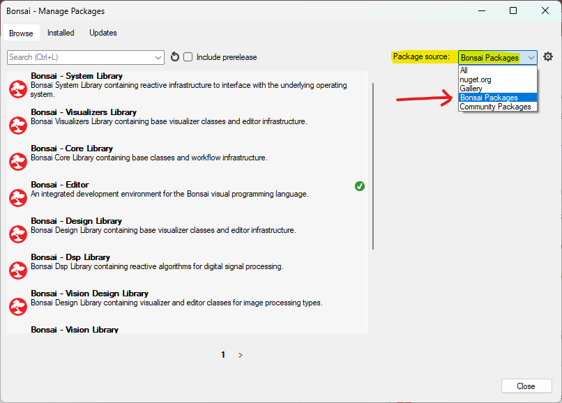

Commutate with Computer Vision#
Note
To commutate in real-time using computer vision, a high-performance NVIDIA graphics card is recommended. More performant GPUs are capable of handling higher resolution images, more frames per second, or computationally-intensive computer vision algorithms, all of which may improve commutation results.
Bonsai supports common pose-estimation software suites such as SLEAP and DeepLabCut that can be used to automate commutation of the coaxial tether attached to the headstage of a freely moving animal. This example uses SLEAP.
Follow the Quick Start to ensure you can control the commutator using Bonsai.
Install the Bonsai.Sleap.Design and Bonsai.StarterPack Packages from Bonsai’s package manager.
Select Bonsai Feed
Install Bonsai.Sleap.Design and Bonsai.StarterPack by searching and clicking install. For example:

Prepare your network model for automating commutation:
Follow these instructions to train a network model if you do not already have one.
Follow these instructions to configure your trained network.
Take a snapshot of your behavioral arena with no animal inside which will serve as the background.
Create a mask of your behavioral arena (i.e. a b&w image file that is white where the animal is allowed and black where the animal is not allowed). In the following example, the mask.png is an all-white file that is the same resolution as the behavioral video data.
Download, configure, and run the following Bonsai workflow for automating commutation using SLEAP:
 sleap-commutate.zip
sleap-commutate.zip
This example workflow uses pre-recorded video of a hand to demonstrate commutation. First run it as is. To configure it for a live video, follow these steps:
Disable the OfflineDebugging node and enable the SetCameras node by right-clicking them and finding the Enable/Disable options in the context menu that appears.
Set the Index property of the SetCameras node to the one that matches your camera’s index. This might requires trial-and-error if multiple cameras are connected.
Set the Size property of the SetCameras and Algorithm nodes to your desired video resolution. Confirm they match.
Set the FileName property of the SetCameras to your desired file name. Also set the other two properties that pertain to saving files: Overwrite and Suffix. Click on those properties and read the description that appears in the bottom-right corner to understand their function.
Set the BackgroundFileName property of the Algorithm node to the background image file created in a previous step.
Set the MaskFileName property of the Algorithm node to the mask image file created in a previous step.
Set the ModelFileName property of the Algorithm node to your trained network file (.pb file).
Set the TrainingConfig property of the Algorithm node to your network configuration (.json file).
Configure the PortName property of the SerialProtocol node to reflect the port to which the commutator is connected.
Run the workflow in Bonsai. If all above steps are correctly performed, the commutator will follow rotations.